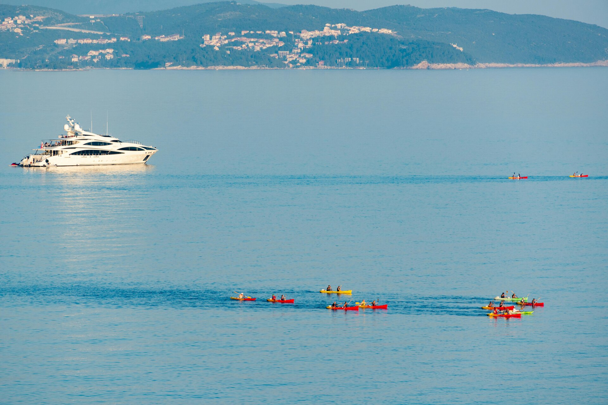

La Parguera: Mangroves, Bioluminescence & the Quieter West Coast

Most visitors to Puerto Rico stay on the northeast corridor between San Juan and Fajardo. La Parguera sits on the opposite end of the island — southwest coast, municipality of Lajas — and the two-and-a-half hour drive from San Juan keeps it well off the standard tourist circuit. For those who make the trip, it offers something that the well-trodden east coast cannot: a genuine fishing village, an intricate mangrove archipelago to explore by boat, and one of Puerto Rico's three bioluminescent bays.
The Village
La Parguera is a compact waterfront community built around a small harbor where fishing boats tie up alongside the tour boats that run bio bay trips. The waterfront strip has restaurants serving fried fish and mofongo, small guesthouses, and a low-key evening scene that fills on weekends when Puerto Rican families drive from across the island to eat, swim, and watch the sun go down over the Caribbean. It is not a resort destination — there are no all-inclusive hotels, no cruise ship piers, and no glossy tour buses. That is entirely the point.
The Mangrove Channels
Behind the village waterfront stretches a labyrinth of mangrove islets and tidal channels. Rental boats and guided tours navigate these channels, passing through tunnels of arching red mangrove roots and opening into small hidden lagoons. The mangroves here support nursery populations of fish and crustaceans, and snorkeling around the submerged roots reveals a world of juvenile fish, sponges, and sea grass. The La Parguera Natural Reserve protects this ecosystem, and the area has been designated as a shelf-edge reef habitat of regional significance.
The Phosphorescent Bay
La Parguera's Phosphorescent Bay — locally known as La Bahía Fosforescente — is one of Puerto Rico's three bioluminescent bays, alongside Laguna Grande in Fajardo and Mosquito Bay on Vieques. Unlike the other two, motorized tour boats are permitted on La Parguera's bay. This accessibility made it the most visited bio bay in Puerto Rico for decades, and that same traffic has affected the water quality and dinoflagellate density over time. Scientists have documented a reduction in bioluminescent intensity compared to earlier measurements.
On a good night — moonless, calm water — the bay still produces a visible glow. It is not as dramatic as Mosquito Bay on Vieques, but the motorized boat experience is more accessible for visitors with mobility constraints, and the village atmosphere before and after the tour is part of what makes the evening worthwhile.
Practical Notes
La Parguera is best combined with a visit to Cabo Rojo's salt flats and Los Morrillos lighthouse, which are roughly 30 minutes further west. The southwest coast gets significantly less rainfall than the north and east, so clear nights are more reliable here. Weekend nights are busy with local visitors; weeknight tours tend to be smaller and quieter.
Frequently Asked Questions
How does La Parguera's bio bay compare to Mosquito Bay? Mosquito Bay on Vieques is generally considered brighter. La Parguera's bay allows motorized boats, which has affected dinoflagellate density over time.
How far is La Parguera from San Juan? Roughly 2 to 2.5 hours by car on the southwest coast near Lajas.
Related Reading
- All Three Bio Bays Compared
- Cabo Rojo Salt Flats & Los Morrillos Lighthouse
- Ponce: Pearl of the South
Book a bioluminescent bay tour in Puerto Rico
See Bio Bay Tours →